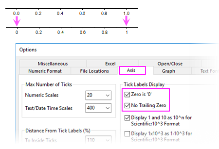
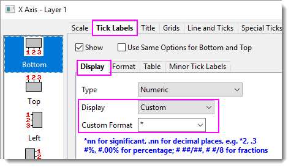

FAQ-841 Wie zeige ich anhängende Nullen in Beschriftungen der Achsenhilfsstriche an wie bei 1,0 für 1?
Trim-Zero-Integer-Tick-Labels
Letztes Update: 03.08.2020
Standardmäßig behält Origin die anhängenden "0", um die Genauigkeit anzugeben. Wenn Sie die anhängende "0" in der Beschriftung der Achsenhilfsstriche entfernen möchten, können Sie:
- Wählen Sie im Menü Einstellungen: Optionen.
- Gehen Sie zur Registerkarte Achsen. Aktivieren Sie Keine anhängende Null und Null ist "0" (falls Ihre Achse den Punkt des Ursprungs einschließt) .
- 
Hinweis:- Sie können auch die Systemvariable @TLC verwenden, um zu steuern, ob die anhängenden Nullen entfernt werden. Der Standardwert für diese Variable ist 0.
- Bei Origin 2020 und 2020b kürzt Origin per Standard die anhängenden Nullen: Die Systemvariable @TLC wurde auf 3 gesetzt und die Kontrollkästchen Keine anhängende Null und Null ist "0" wurden aktiviert.
|
 | Falls Sie in älteren Versionen vor Origin 2020 die anhängende "0" in den Hilfsstrichsbeschriftungen von ganzen Zahlen entfernen wollten:
- Klicken Sie doppelt auf die Achse, um den Dialog Achsen zu öffnen.
- Gehen Sie zur Registerkarte Beschriftung der Hilfsstriche und wählen Sie die untergeordnete Registerkarte Anzeige. Setzen Sie Anzeige auf Benutzerdefiniert und das Benutzerdefinierte Format auf *.
- 
Hinweis: Sie können * am Ende einer anderen Syntax kombinieren. Zum Beispiel:
- .1* bedeutet, dass 1 Dezimalstelle beibehalten wird und unnötige Nullen gekürzt werden.
- .2* bedeutet, dass 2 Dezimalstellen beibehalten und unnötige Nullen gekürzt werden.
|
Schlüsselwörter:signifikante Stelle, Beschriftung, Achsen, unnötige Null